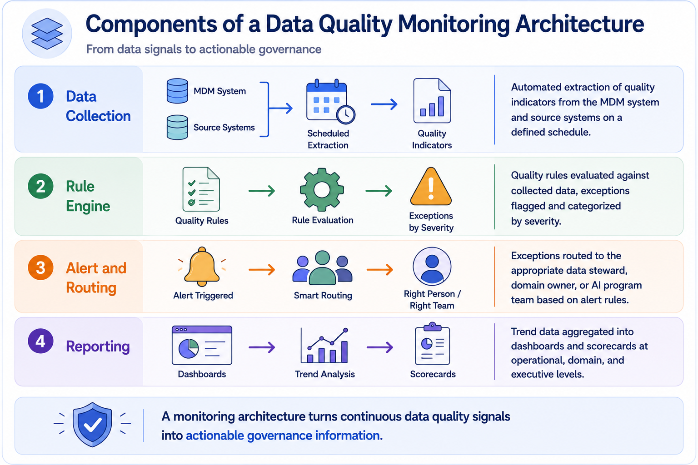
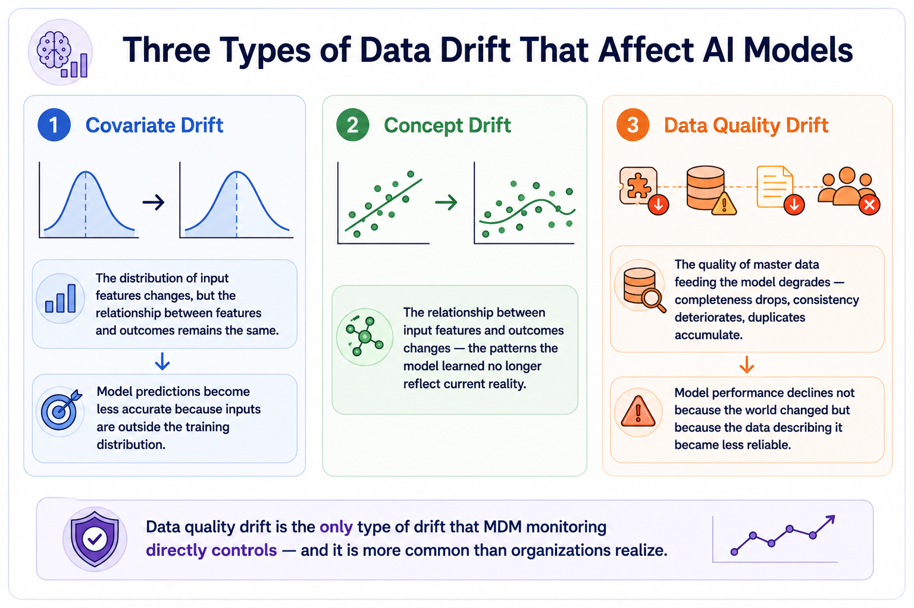
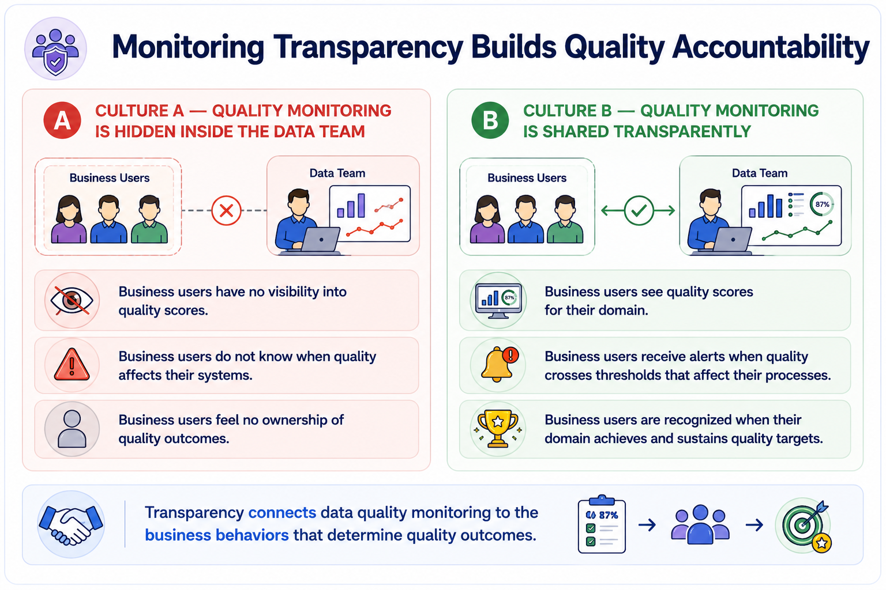

Monitoring Quality Over Time
Module support notes
Designing a Monitoring Architecture
A data quality monitoring architecture is the technical infrastructure that makes continuous quality visibility possible. At the collection layer, quality indicators are extracted from the MDM system and source systems on schedules appropriate to the rate of change in each domain. At the rule engine layer, these indicators are evaluated against defined thresholds and trend baselines, with exceptions flagged and categorized. At the alert and routing layer, exceptions are directed to the people responsible for resolving them — with AI pipeline exceptions routed to AI program teams in addition to standard stewardship workflows. At the reporting layer, trend data is aggregated into governance dashboards and scorecards visible at every level of the organization.
Note
The four layers of a monitoring architecture each serve a distinct purpose: Collection surfaces raw quality signals; Rule Engine evaluates them against thresholds; Alert and Routing directs exceptions to the right people; Reporting turns trend data into governance visibility. All four are needed — a monitoring program missing any one layer will have gaps in its ability to detect, route, and report quality issues.

Data Drift — A Deeper Look
Data drift is a well-known challenge in AI operations, but its relationship to data quality is often underappreciated. Covariate drift and concept drift are typically discussed as statistical phenomena requiring model retraining. Data quality drift — the degradation of the master data that feeds the model — is a governance failure that requires MDM intervention rather than model retraining alone.
An organization that retrains a model on degraded data will produce a new model that performs no better than the old one, because the root cause has not been addressed. MDM quality monitoring specifically targets data quality drift — detecting it early, routing it to the right resolution process, and ensuring that model retraining is triggered only when the underlying data has been restored to the quality level the model requires.
- Covariate drift — input feature distributions change, but the feature-outcome relationship holds; model accuracy declines because inputs fall outside the training distribution
- Concept drift — the relationship between features and outcomes changes; the patterns the model learned no longer reflect current reality
- Data quality drift — master data feeding the model degrades; model performance declines not because the world changed but because the data describing it became less reliable
Warning
Data quality drift is the only type of drift that MDM monitoring directly controls — and it is more common than organizations realize. If a model's performance is declining and data quality drift is the cause, retraining on the same degraded data will not fix it. Resolve the data quality problem first, then retrain.

Building a Quality Culture Through Monitoring Transparency
One of the most powerful effects of transparent data quality monitoring is its impact on organizational behavior. When business teams can see the quality score of their data domain — and understand how that score affects their operational processes and their AI systems — they develop a stake in quality outcomes that purely technical data management programs cannot generate.
Data quality becomes visible as a shared responsibility rather than a background IT function. Domain business owners begin asking about their quality trends in governance reviews. Data entry teams take prevention controls more seriously when they can see the impact of their inputs on downstream quality scores. This behavioral shift — from data quality as an IT metric to data quality as a business performance indicator — is one of the most durable outcomes a well-designed monitoring program can produce.
Tip
Share quality scorecards with business domain owners, not just data teams. When business users can see the quality score for their domain, receive alerts when scores cross thresholds affecting their processes, and are recognized when their domain sustains quality targets, quality ownership shifts from IT to the business. That shift is worth more than any technical monitoring capability on its own.

Effective monitoring answers three questions for every stakeholder: what to watch, how to watch it, and who is responsible for acting when something needs attention.